| 목적 | 경일게임아카데미 개발/기획 합반 팀프로젝트 |
|---|---|
| 장르 | 서바이벌·뱀서라이크 |
| 플랫폼 | 모바일 (Android) |
| 개발 환경 | Unity3D, C# |
| 개발 기간 | 24.04.01 ~ 24.04.16 (12일) |
| 개발 인원 | 4명 |
| 담당 업무 | 맵 시스템 설계 및 최적화 · 데이터 테이블 연동 · 몬스터/동물 AI(FSM) · 캐릭터 상호작용(채광, 벌목, 전투, 빌딩) |
게임은 낮/밤 사이클로 진행되며, 낮에는 맵의 돌·나무를 채집하고 동물을 사냥해 식량을 얻고, 밤에는 맵 외곽 8개 구역에서 몬스터가 생성돼 플레이어를 추격합니다.
하루가 지나면 맵에 배치된 오브젝트(돌/나무/동물)가 모두 사라지고 새로 랜덤 배치됩니다. 기획 의도대로 오브젝트를 분산 배치하기 위해, 맵을 x*y 행렬로 표현하고 이를 9개 구역으로 나눈 뒤, 날짜마다 구역별로 스폰 개수를 배분하고 각 구역 내에서는 BFS로 이미 스폰된 칸을 제외한 랜덤 위치에 배치하도록 설계했습니다.
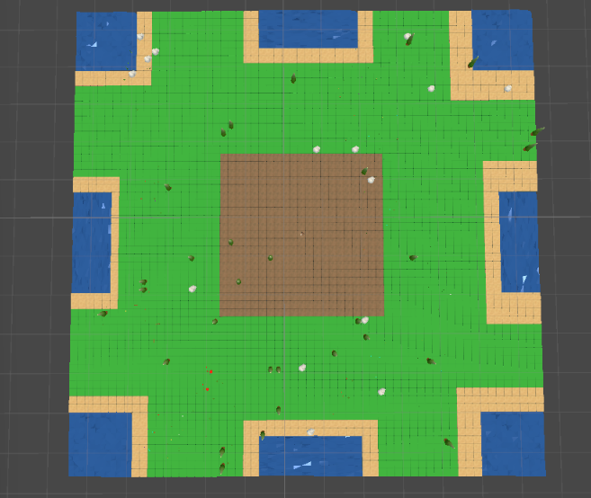
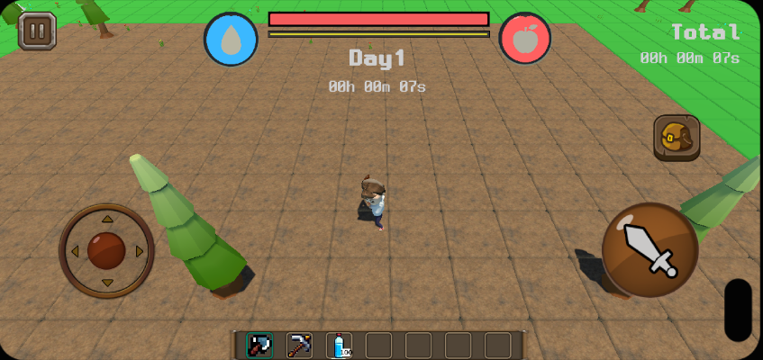
몬스터 오브젝트 스폰 시 위치 겹침을 방지하기 위해 지정된 스폰 좌표 (행렬 상 x,y)에서 bfs를 수행해 최대한 지정 좌표에서 가까운 거리에서 몬스터를 스폰할 수 있게 적용했습니다.
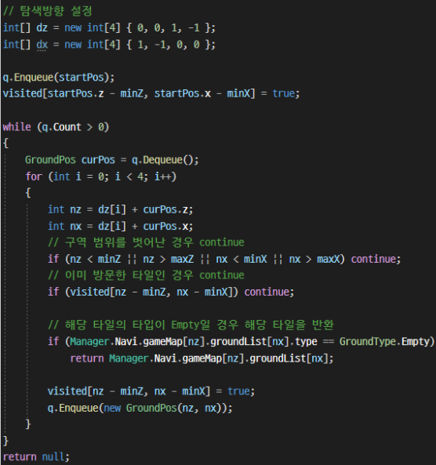
맵을 행렬로 관리하는 설계에 집중하다 보니, 맵을 구성하는 타일 하나하나를 개별 게임 오브젝트로 배치하게 됐습니다. 그 결과 오브젝트 수가 지나치게 많아져 Batches가 크게 늘고, FPS가 11.6까지 떨어졌습니다.
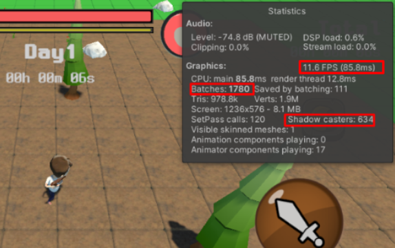
모든 타일을 Static Object로 표시하고, MeshCollider를 BoxCollider로 교체했으며, 그림자가 필요 없는 바닥 오브젝트의 Shadow Cast Mode를 껐습니다. 그 결과 FPS는 40까지 오르고 Batches도 576까지 줄었지만, 이 결과만으로는 모바일 목표 성능(60fps)을 달성할 수 없다고 판단해 접근 방식을 다시 검토했습니다.
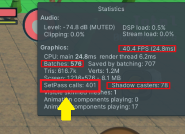
타일 하나하나는 종류 정보(데이터)와 충돌체만 있으면 되고, 개별적으로 렌더링될 필요는 없다고 관점을 바꿨습니다. 이를 위해 메시 결합(Mesh Combining)을 적용했습니다. 타일 하나는 1104개의 정점을 갖는데, CombineMeshes는 한 번에 2^16(65,536)개까지의 정점만 결합할 수 있어 59개씩(1104×59=65,136) 묶어 결합했습니다. 그 결과 Batches는 160, SetPass Call은 91까지 줄어 60fps를 달성했습니다.
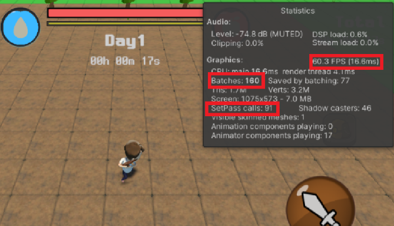
이 최적화는 프로파일러라는 도구를 몰랐을 때, '최적화를 해보자'는 생각으로 처음 본격적으로 접근한 경험이었습니다. Unity 에디터의 Stats 창에서 Batches·SetPass Call·FPS 수치를 비교해가며 점진적으로 개선했고, 이 성과를 통해 최적화의 재미를 알게 됐습니다.
동물과 몬스터 각각 서로 다른 행동 패턴이 필요했습니다.
분류별로 공통되는 행동과 다른 행동이 명확히 구분된다고 판단해 상태 패턴(State Pattern)을 적용했습니다. 각 행동을 하나의 상태로 정의하고 Enter/Update/LateUpdate/FixedUpdate/Exit를 구현했으며, FSM이 상태 간 전이를 관리하도록 구성했습니다.
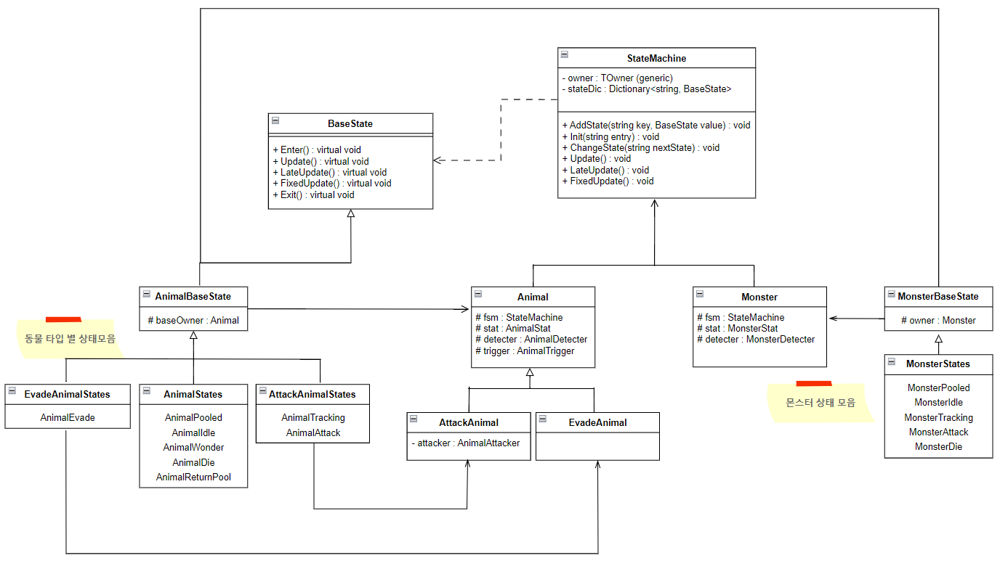
StateMachine UML 다이어그램
추적 경로 계산에 NavMesh(A* 기반)를 사용했는데, 이를 Update에서 매 프레임 계산하다 보니 다수의 오브젝트가 동시에 존재할 때 FPS가 저하되는 문제가 발생했습니다.
코루틴을 사용해 매 프레임이 아닌 약 0.1~0.5초마다 한 번씩 경로를 재계산하도록 수정했습니다. 연산량은 줄었지만, 방향 전환이 끊기는 듯한 부자연스러운 움직임이 나타났습니다. (+코루틴 객체의 빈번한 생성/삭제에 대한 불쾌감도 있었습니다..)
시간 간격이 아니라 4-1에서 만든 맵 행렬을 활용해, 플레이어가 위치한 타일이 바뀔 때만 추적 경로를 재계산하도록 관점을 바꿨습니다. 게임 특성상 플레이어는 건축이 가능한 중앙 지역에 주로 머물며 위치 변화가 잦지 않기 때문에, 재계산 빈도를 크게 줄이면서도 실제 이동 시엔 즉시 반응해 1차 시도의 끊김 문제도 함께 해결됐습니다.
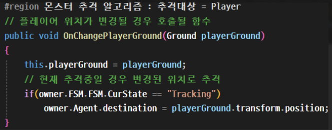
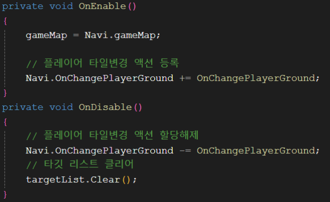
플레이어가 설치한 구조물에 완전히 둘러싸인 경우, 몬스터의 실제 공격 대상은 플레이어가 아니라 그 벽이 됩니다. 이 경우 매번 플레이어까지의 경로를 계산할 필요가 없다고 판단해, 추적 시작 시점(몬스터는 스폰 즉시, 동물은 트리거 발동 시)에 BFS로 플레이어가 벽에 둘러싸여 있는지 먼저 판별하고, 둘러싸여 있다면 레이캐스트로 가장 가까운 벽을 찾아 그 벽까지만 A*를 진행하도록 했습니다.
코드 링크 : MonsterDetecter.cs
이 BFS 판별은 현재 개체마다 추적을 시작할 때 각각 실행됩니다. 하지만 벽에 둘러싸였는지 여부는 개체별로 다르게 계산할 필요 없이 한 번만 계산해 모든 개체에 브로드캐스팅하면 연산을 더 줄일 수 있었을 거라 생각합니다.
프로젝트 기간이 짧아 밸런스 테스트를 빠르게 반복할 수 있어야 했습니다. 그런데 날짜별로 생성되는 오브젝트나 몬스터 수를 단순 수치로 전달받아 코드에 직접 적용하는 방식은 시간이 많이 들었고, 기획자들이 깃허브나 유니티 에디터에 익숙하지 않다는 점도 걸렸습니다. 이 문제를 해결하기 위해 기획자가 접근하기 쉬운 CSV 데이터 테이블 방식을 도입하기로 했습니다.
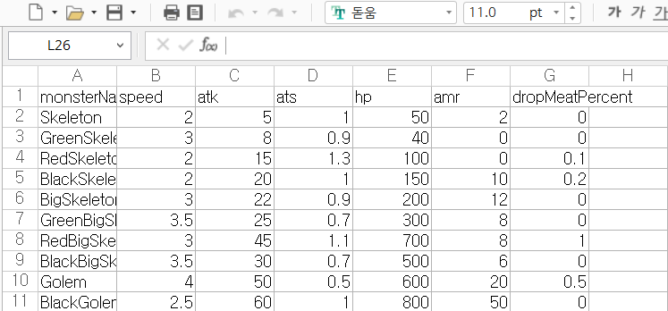
Monster Data Table 예시
날짜별로 필요한 수치를 엑셀 파일로 정리해 기획자에게 전달하고, 이후에도 같은 형식으로 값을 채워달라는 양식 문서를 함께 전달했습니다. 기획자가 작성한 엑셀 파일은 CSV로 내보내 유니티에서 텍스트로 파싱했습니다. 게임 최초 실행 시 CSV를 읽어 DataManager에 날짜를 key로, 스폰 데이터를 value로 하는 Dictionary에 저장해두고, 해당 날짜가 되면 이 데이터를 꺼내 4-1의 스폰 시스템에 반영했습니다.
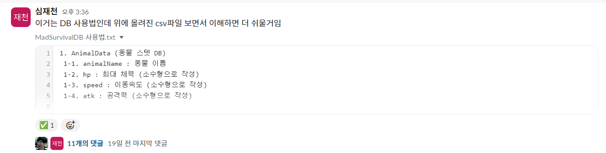
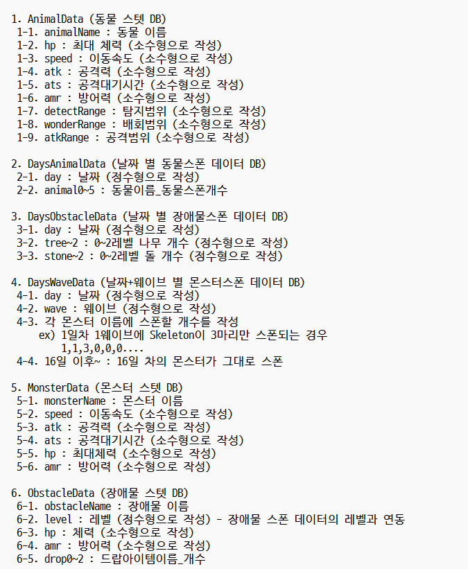
간단한 사용법을 Slack Tool을 통해 전달
조잡한 형식의 엑셀·데이터 테이블이지만, 짧은 개발 기간 동안 밸런스 테스트에 드는 시간을 크게 줄일 수 있었습니다. 다만 날짜 데이터는 Dictionary가 아니라 배열로도 충분히 처리할 수 있었을 것 같습니다.